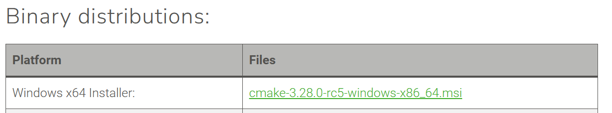
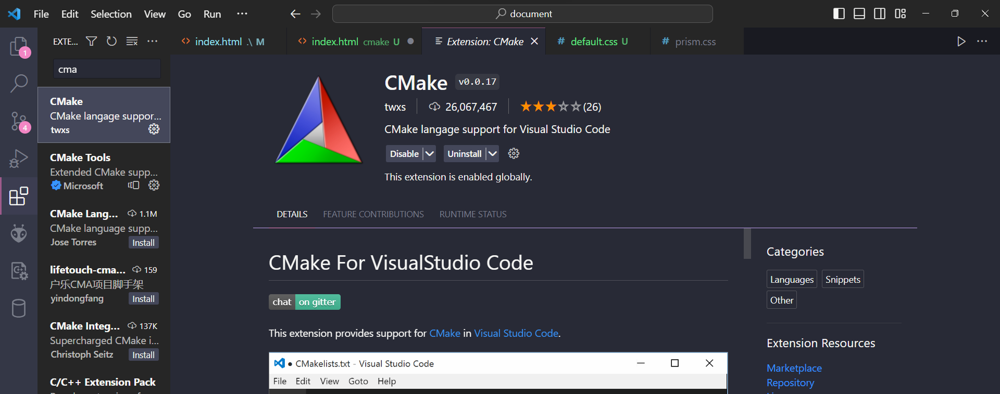

Hướng dẫn nhanh cài CMake (Window)
I. Môi trường CMake
https://cmake.org/download/
Chọn tải bằng .msi

Sau đó cài đặt như thường.
II. CMake extension cho VSCode

III. Chạy
- Mở server project trong VSCode và mở terminal (Crt + ~ )
- Chuyển hướng tới thư mục build
cd build- Biên dịch và chạy:
mingw32-make runCó thể sửa code tùy ý rồi chạy
mingw32-make run
Lưu ý, các lệnh
mingw32-make phải được chạy trong thư mục build
Hướng dẫn về cấu trúc project ở trong file pdf.